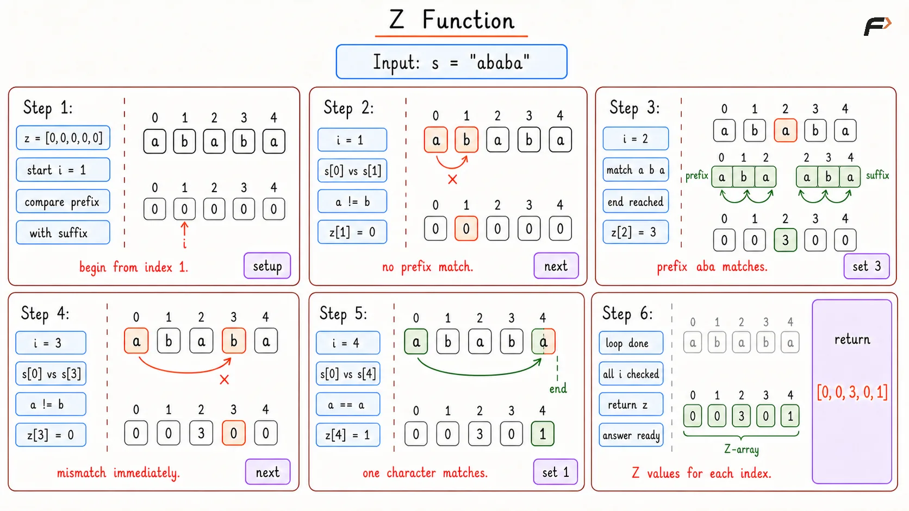
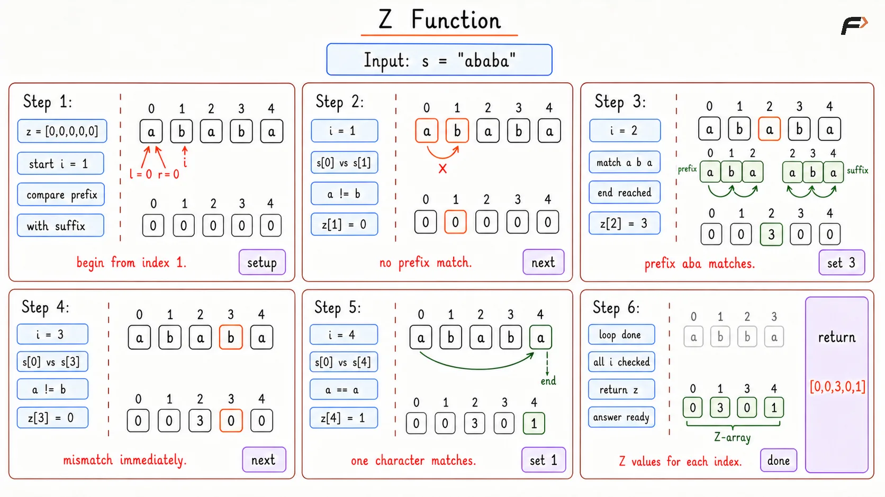

Z Function
Given a string s of length n, build an array z of length n.For every index i, z[i] stores the length of the longest substring starting at index i that matches the prefix of s.
By common convention, z[0] = 0 because the whole string obviously matches itself, and that value is usually not useful for the algorithm.
Example 1
Input: s = "aabxaab"
Output: [0, 1, 0, 0, 3, 1, 0]
Explanation: At index 4, the substring starts as "aab", which matches the prefix "aab", so z[4] = 3.
Example 2
Input: s = "aaaaa"
Output: [0, 4, 3, 2, 1]
Explanation: Every suffix is made of only 'a', so each position matches a smaller prefix of the string.
Brute Force Approach
The most direct way to understand the Z Function is to stand at every index and compare the string from there with the prefix.
For example, at index i, compare s[i] with s[0], then s[i + 1] with s[1], and keep going while the characters match. The number of successful comparisons becomes z[i].
This is easy to picture and useful for learning the meaning of the Z-array. The downside is that the same characters may be compared again and again from different positions, which makes it slow for long strings like "aaaaaa...".
Algorithm
Create an array
zof sizenand fill it with0. This is needed because every index starts with no confirmed prefix match.Start checking from index
1becausez[0]is kept as0by convention.For each index, compare the prefix of the string with the substring starting at that index. This tells exactly how many characters match from that position.
Increase
z[i]while the characters are equal and the comparison stays inside the string. This count becomes the answer for that index.Return the completed
zarray after every index has been processed.
Dry Run

Z Function Brute Dry Run
Solution
#include <bits/stdc++.h>
using namespace std;
class Solution {
public:
/*
Builds the Z-array by comparing every suffix
directly with the prefix of the string.
*/
vector<int> zFunction(string s) {
// Store the length of the input string.
int n = s.size();
// Store the Z-value for every index.
vector<int> z(n, 0);
for (int i = 1; i < n; i++) {
// Keep matching while both characters are equal
// and the comparison stays inside the string.
while (i + z[i] < n && s[z[i]] == s[i + z[i]]) {
z[i]++;
}
}
return z;
}
};
// Driver code starts
int main() {
string s = "aabxaab";
Solution obj;
vector<int> answer = obj.zFunction(s);
for (int value : answer) {
cout << value << " ";
}
return 0;
}Complexity Analysis
Time Complexity: O(N2), because for every index, the comparison can scan many characters in the worst case.
Space Complexity: O(N), because the Z-array stores one value for every index.
Optimal Approach
The brute force method works, but it suffers from amnesia—it recalculates matches it has already seen. The optimal Z-algorithm fixes this by remembering our most successful recent match.
Think of this remembered match as a "Z-box". It is defined by two pointers, left and right.
The Z-Box (
[left, right]): This is a window representing the rightmost segment of the string that perfectly matches the prefix of the string.The "Twin" Concept: Because everything inside this box is an exact copy of the string's prefix, any character inside the box has an exact "twin" near the beginning of the string. The twin for index
iis located at indexi - left.
Instead of starting from zero at every index i, we check if i is safely inside our Z-box. If it is, we just look at its twin. Whatever the twin scored (its Z-value), index i will likely score the exact same, saving us from doing the work twice.
The Three Scenarios
When evaluating a new index i, only three things can happen:
Outside the Box (
i > right): We are in unknown territory. We have no memory to rely on, so we must compare characters one by one starting from the prefix (just like the brute force method).Inside the Box, fully contained: We look at our twin (
i - left). The twin's previously calculated Z-value fits entirely within our current Z-box. We simply copy the twin's Z-value fori. No new comparisons are needed!Inside the Box, touching the edge: We look at our twin, but its Z-value is so large that it extends past the right edge of our Z-box. Because we only know what's inside the box, we can copy the twin's value up to the edge of the box (
right - i + 1). From that edge onward, we must manually compare characters to see how far the match actually goes.
Algorithm
Initialize variables (
zarray,left,right): Set up thezarray to store answers, usingleftandrightstarting at 0 to track the boundaries of your verified memory box.Start the loop (
i = 1ton - 1): Iterate through the string to evaluate every possible starting position, skipping index 0 since the full string trivially matches itself.Find the twin (
i <= right): If the current index is inside the known memory box, calculatei - leftto locate its identical twin near the beginning of the string to reference its previously calculated score.Copy safe values (
min(z[k], right - i + 1)): Restrict the copied twin's value to the remaining distance of the box's right edge, ensuring you only reuse matches that fit strictly within verified territory.Extend manually: Use a
whileloop to step into unverified territory, comparing characters one by one to see how far the actual match continues beyond your current memory.Update boundaries (
if i + z[i] - 1 > right): If the manual comparisons stretch further right than the old box, updateleftandrightto cover this newly discovered territory, maximizing the chance of skipping work in future iterations.Return the result: The array is now fully populated with the longest prefix matches for every position, achieved without redundant character comparisons.
Dry Run

Z Function Optimal Dry Run
Solution
#include <bits/stdc++.h>
using namespace std;
class Solution {
public:
/*
Builds the Z-array in linear time by reusing
matches from the current rightmost Z-box.
*/
vector<int> zFunction(string s) {
// Store the length of the input string.
int n = s.size();
// Store the Z-value for every index.
vector<int> z(n, 0);
// Mark the current rightmost segment that matches the prefix.
int left = 0;
int right = 0;
for (int i = 1; i < n; i++) {
// If the index is inside the current Z-box,
// reuse only the part that is guaranteed to match.
if (i <= right) {
// Find the matching position inside the prefix.
int mirrorIndex = i - left;
// Count how much of the current Z-box is still available.
int remainingBoxLength = right - i + 1;
// Reuse the safe part of the previously computed answer.
z[i] = min(remainingBoxLength, z[mirrorIndex]);
}
// Compare only the unknown part beyond the reused match.
while (i + z[i] < n && s[z[i]] == s[i + z[i]]) {
z[i]++;
}
// If this match reaches farther, it becomes the new Z-box.
if (i + z[i] - 1 > right) {
// Save the start of the new rightmost matching segment.
left = i;
// Save the last matched index of the new segment.
right = i + z[i] - 1;
}
}
return z;
}
};
// Driver code starts
int main() {
string s = "aabxaab";
Solution obj;
vector<int> answer = obj.zFunction(s);
for (int value : answer) {
cout << value << " ";
}
return 0;
}Complexity Analysis
Time Complexity: O(N), because each extra character comparison extends the right boundary, and that boundary can move only up to the end of the string.
Space Complexity: O(N), because the Z-array stores one value for every index.
Interview follow-up Questions
The whole string matches itself at index 0, so its value could be considered n. But in most Z Function implementations, z[0] is kept as 0 because it is not needed for computing the remaining values.